文档说明：
- 上一篇 已说明 Podman 原理与实现，该文档将继续说明 Podman 容器的使用与实践。
文档目录：
- podman 单容器使用及通信方式示例
- 使用 podman-compose 实现 Gogs 轻量级代码仓库
- podman pod 多容器编排使用示例
- 使用 podman kube play 实现 WordPress 的一键部署
- Podman 使用报错示例
- Podman 有待测试功能
podman 单容器使用及通信方式示例：
- 示例 1：
👉 使用 podman 命令登录Quay公共容器镜像仓库并推送镜像：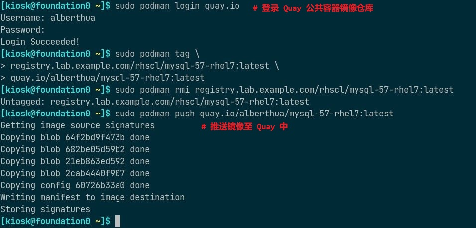👉 搜索并拉取 Red Hat 容器镜像仓库中的镜像列表：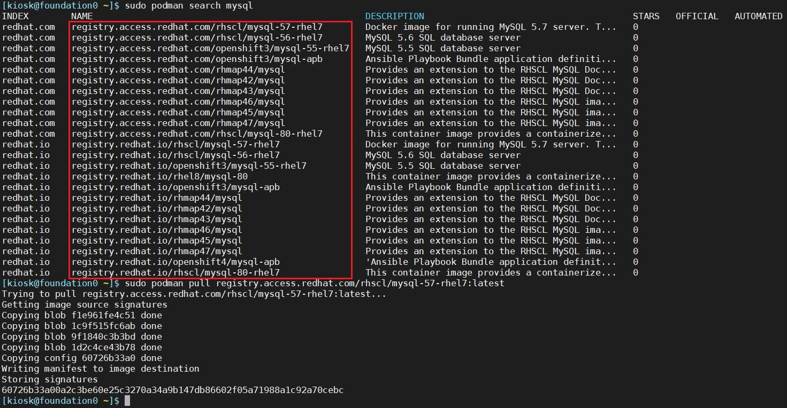 - 示例 2：
🤘 部署并使用云原生轻量级对象存储MinIO Server：
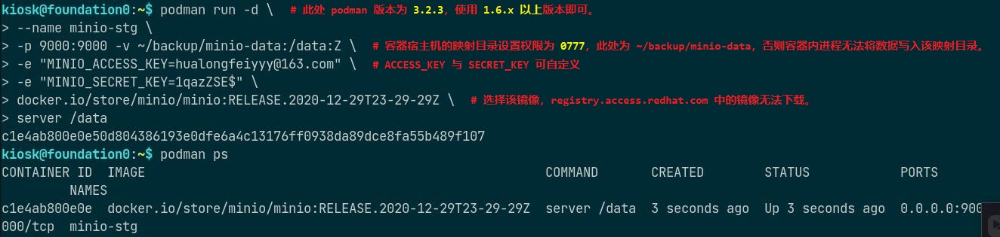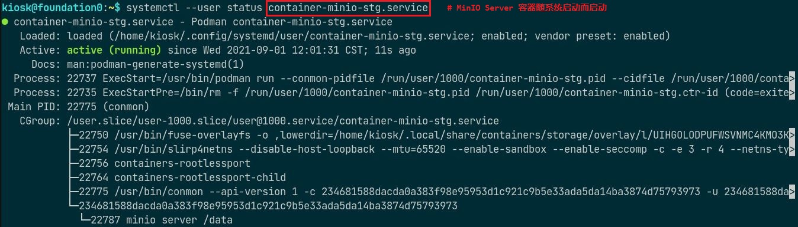以上示例将 podman 与 systemd 集成实现普通用户的 rootless 容器开机自启动。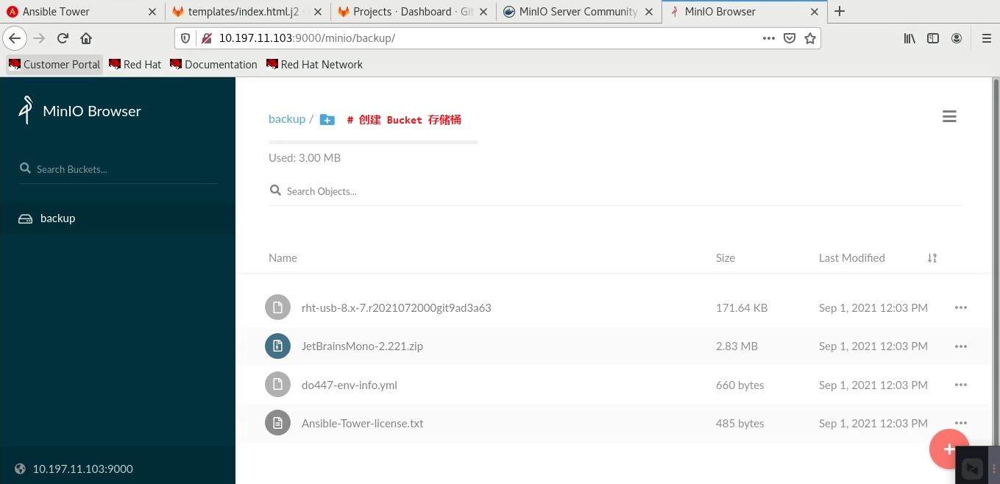关于 MinIO Server 分布式对象存储的详细内容，请 参考官网。 - 示例 3：
🤘 请参考该文档 部署 loganalyzer 管理集中式日志 以理解多个 rootfull 容器间的通信方式（通过cni-podman0网桥与iptables互相通信）。
使用 podman-compose 实现 Gogs 轻量级代码仓库：
- 使用
podman-compose通过link链接至指定的容器建立通信。 如下所示，部署 Gogs 轻量级代码仓库：
Gogs + PostgreSQL- 关于 podman-compose 的安装可参考 GitHub 项目
🤔 可考虑使用 podman-compose 部署轻量级
Gitea + DroneCI 持续集成平台- 关于 Gogs 项目的详细内容可参考 Gogs GitHub 项目
- Gogs 代码版本控制仓库使用 Golang 语言开发，可与后端 MySQL、PostgreSQL、SQLite3、TiDB 等集成。
- 此处使用容器化部署 Gogs，并与 PostgreSQL 集成。
部署用主机上必须先安装 podman 与 podman-compose，并拉取相应容器镜像加速部署过程，如下所示：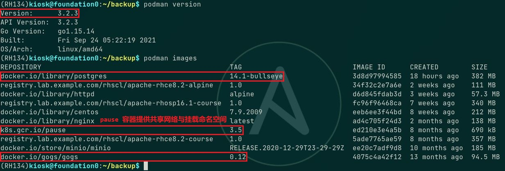
📌注意：
podman-compose 使用创建
pod将多个容器组建成 pod 的方式进行容器编排，因此必须具有pause容器镜像提供 pod 的共享网络命名空间与挂载命名空间。使用普通用户部署，过程如下所示：
1
2
3
4
5
6
7
8
9
10
11
12$ mkdir -p gogs-app/gogs-data/{gogs,gogs-logs,postgresql}
# 创建用于存储 gogs 与 postgresql 数据映射的目录
$ sudo chown -R 100999:100999 gogs-app/gogs-data/{gogs,gogs-logs}
# 更改映射目录的属组，否则容器启动权限报错。
$ getenforce
Enforcing
# 确认系统处于 enforcing SELinux 状态，需设置目录映射时的标签。
# 也可禁用 SELinux，若禁用 SELinux，以下两步可不执行并且去除 podman-compose 定义文件中的 "Z"。
$ sudo semanage port -a -t http_port_t -p tcp 10800
$ sudo semanage port -a -t ssh_port_t -p tcp 10022
# 添加自定义端口至 SELinux 数据库中，否则由于权限问题无法访问并安装 Gogs。
$ vim gogs-app/gogs-postgres-podman-compose.yaml如下所示
gogs-postgres-podman-compose.yaml文件可参考 此处：1
2
3
4
5
6
7
8
9
10
11
12
13
14
15
16
17
18
19
20
21
22
23
24
25version: "3"
services:
postgresql:
image: docker.io/library/postgres:14.1-bullseye
container_name: "gogs-postgresql"
volumes:
- "./gogs-data/postgresql:/var/lib/postgresql:Z"
environment:
- "POSTGRES_USER=gogs"
- "POSTGRES_PASSWORD=redhat"
- "POSTGRES_DB=gogs"
ports:
- "5432:5432"
gogs:
image: docker.io/gogs/gogs:0.12
container_name: "gogs"
volumes:
- "./gogs-data/gogs:/data:Z"
- "./gogs-data/gogs-logs:/app/gogs/log:Z"
ports:
- "10022:22"
- "10800:3000"
links:
- postgresql编辑完成 yaml 文件后，使用如下命令启动应用：
1
2
3
4
5
6
7
8
9
10
11
12
13
14
15
16
17
18$ podman-compose -f gogs-app/gogs-postgres-podman-compose.yaml --project gogs-app up
# 启动 Gogs 与 PostgreSQL 容器，并指定项目名称。
# 若不指定项目名称，项目默认为 yaml 文件所在的目录名称。
# 首次启动容器时，所有的启动与运行日志将打印至终端屏幕上，该终端不可关闭，直至关闭所有服务容器后将自动退出。
$ podman-compose -f gogs-app/gogs-postgres-podman-compose.yaml --project gogs-app ps
using podman version: podman version 3.2.3
podman ps -a --filter label=io.podman.compose.project=gogs-app
CONTAINER ID IMAGE COMMAND CREATED STATUS PORTS NAMES
2bed211ffe60 docker.io/library/postgres:14.1-bullseye postgres 6 hours ago Up 3 hours ago 0.0.0.0:10022->22/tcp, 0.0.0.0:10800->3000/tcp, 0.0.0.0:5432->5432/tcp gogs-postgresql
2c7d0de4b0a0 docker.io/gogs/gogs:0.12 /bin/s6-svscan /a... 6 hours ago Up 3 hours ago 0.0.0.0:10022->22/tcp, 0.0.0.0:10800->3000/tcp, 0.0.0.0:5432->5432/tcp gogs
0
# 查看 podman-compose 管理的容器服务
$ podman ps
CONTAINER ID IMAGE COMMAND CREATED STATUS PORTS NAMES
b6df150a3a49 k8s.gcr.io/pause:3.5 6 hours ago Up 6 hours ago 0.0.0.0:10022->22/tcp, 0.0.0.0:10800->3000/tcp, 0.0.0.0:5432->5432/tcp c3a10da46f18-infra
2bed211ffe60 docker.io/library/postgres:14.1-bullseye postgres 6 hours ago Up 3 hours ago 0.0.0.0:10022->22/tcp, 0.0.0.0:10800->3000/tcp, 0.0.0.0:5432->5432/tcp gogs-postgresql
2c7d0de4b0a0 docker.io/gogs/gogs:0.12 /bin/s6-svscan /a... 6 hours ago Up 3 hours ago 0.0.0.0:10022->22/tcp, 0.0.0.0:10800->3000/tcp, 0.0.0.0:5432->5432/tcp gogs
# 查看正在运行的容器，包含 infra 容器。所有容器正常运行后，使用
http://<容器宿主机 IP 地址>:10800访问 Gogs 安装界面，需填入的值参考如下：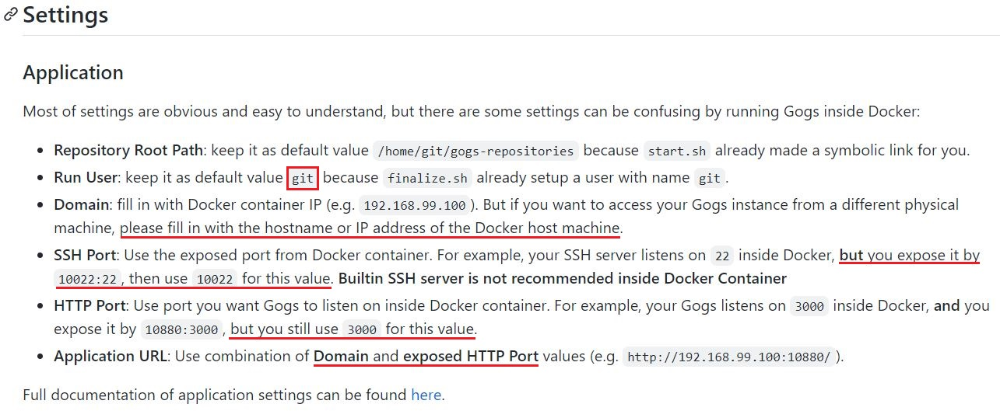- Run User 值：默认
git。 - Domain 值：若要从其他主机连接至 Gogs 仓库，Domian 必须配置为容器宿主机的 IP 地址或主机名。
- SSH Port 值：podman-compose 定义文件中对外暴露的 SSH 端口号。
- HTTP Port 值：默认
3000端口。
- Run User 值：默认
- Web 页面中最后需设置 Gogs 管理员账号以完成安装。
- 安装完成后，使用管理员账号登录或重新注册新账号登录与使用。
- 如下所示，使用
devops用户创建新代码库并完成 commit 提交：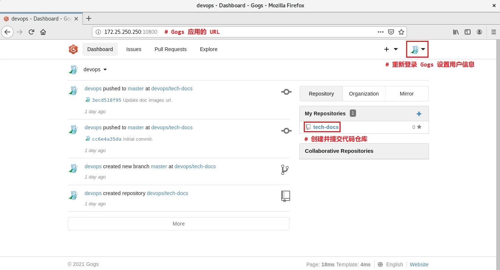 如需关闭 Gogs 代码仓库，请使用以下方法停止 gogs 与 postgresql 容器服务即可：
1
2
3
4
5
6
7
8
9
10
11$ podman-compose -f gogs-app/gogs-postgres-podman-compose.yaml --project gogs-app stop gogs postgresql
using podman version: podman version 3.2.3
podman stop -t 10 gogs
gogs
0
podman stop -t 10 gogs-postgresql
gogs-postgresql
0
$ podman ps
CONTAINER ID IMAGE COMMAND CREATED STATUS PORTS NAMES
b6df150a3a49 k8s.gcr.io/pause:3.5 30 hours ago Up 39 minutes ago 0.0.0.0:10022->22/tcp, 0.0.0.0:10800->3000/tcp, 0.0.0.0:5432->5432/tcp c3a10da46f18-infra💥注意：
切不可直接使用 podman-compose 命令的
down子命令，该子命令将所有相关的容器与 pod 全部删除，pod 删除后无法将其中的各容器映射至宿主机对应的目录中，即使原始数据依然保留于目录中。重新启动 Gogs 代码仓库的方式，如下所示：
1
2
3
4
5
6
7
8$ podman-compose -f gogs-app/gogs-postgres-podman-compose.yaml --project gogs-app start gogs postgresql
using podman version: podman version 3.2.3
podman start gogs
gogs
0
podman start gogs-postgresql
gogs-postgresql
0
podman pod 多容器编排使用示例：
podman-compose的使用依赖于python版本以及依赖包，若在不同平台中使用可能存在无法安装对应版本的 python 及依赖包的情况，因此 podman-compose 并不能很好的解决单机上的多容器编排问题。- 值得庆幸的是，podman 自带的
podman pod子命令可原生支持多容器编排，该命令可将多容器运行于同一 pod 中使用相同的network namespace以更方便的调配容器。 如下命令所示：
👉 从头创建 pod 并附加额外的容器：1
2
3
4
5
6
7
8
9
10
11$ podman pod create --name <pod_name> [-p <host_port>:<pod_port>]
# 使用 pause 容器镜像从头创建 pod
# 若之后需在 pod 中创建使用端口映射的容器，需要在创建 pod 之初指定端口映射关系，无法在创建容器时指定，由于 pod
# 提供了其中所有容器的共享网络命名空间。
# 注意：若需指定多个端口，可同时使用多个 -p 选项。
$ podman run -d --name <container_name> --pod <pod_name> <container_image>:<tag>
# 创建容器将其附加到 pod 中
$ podman pod [ps|list|ls]
# 查看已存在的 pod
$ podman pod [stop|rm] <pod_name>
# 停止或删除 pod，将一并删除 pod 中的所有容器。📌注意：
k8s.gcr.io/pause:3.5镜像拉取需要科学上网。- 若无法拉取，可先拉取
registry.aliyuncs.com/google_containers/pause:3.5镜像，再更改其tag即可。
👉 随创建容器时同时创建 pod：
1
2
3
4
5
6
7
8
9$ podman run -d \
--name <container_name> --pod new:<pod_name> \
[-p <host_port>:<pod_port>] \
<container_image>:<tag>
# 随创建容器时同时创建 pod
$ podman run -d \
--name <container_name> --pod <pod_name> \
<container_image>:<tag>
# 在 pod 中创建新的容器示例 1：
如下所示，创建名为nginx-docs的容器并同时创建名为docker-docs的 pod，也可创建其他容器添加至 pod 中，pod 中的容器共享network namespace：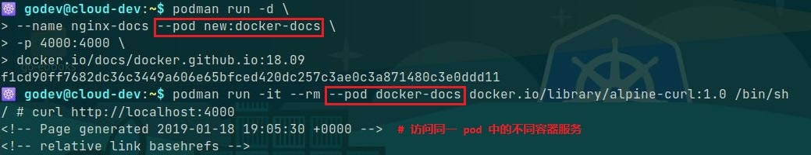- 🤘 示例 2：
使用 podman 在单个 pod 中集成多容器的方法，可参考 之前发布的文档，该文档中将 Quay、MySQL 与 Redis 的单容器集成在单个 pod 中，使用 pod 的network namespace方便 Quay 镜像仓库的管理。
🚀 使用 podman kube play 实现 WordPress 的一键部署：
- 除上述 podman pod 容器编排的方式以外，podman 也已支持类似于使用
Kubernetes结构化yaml文件的方式，即可使用podman kube play创建Pod、Deployment与PersistentVolumeClaim等。 可将由
podman pod create创建的 pod 通过如下命令生成 pod 的资源定义文件：1
2$ podman generate kube <pod_name> > <application_name>.yml
# 导出已存在 pod 的资源定义文件该示例中生成的 pod 资源定义文件需稍加改动用于应用的部署，可参考 该链接：
1
2
3
4
5
6
7
8
9
10
11
12
13
14
15
16
17
18
19
20
21
22
23
24
25
26
27
28
29
30
31
32
33
34
35
36
37
38
39
40
41
42
43
44
45
46
47
48
49
50
51
52
53
54
55
56
57
58
59
60
61
62
63
64
65
66
67
68
69
70
71
72
73
74
75
76
77
78apiVersion: v1
kind: Pod
metadata:
labels:
app: mywpblog
name: mywpblog
spec:
automountServiceAccountToken: false
containers:
- args:
- mysqld
env:
- name: MYSQL_USER
value: wp_user
- name: MYSQL_ROOT_PASSWORD
value: redhat
- name: MYSQL_PASSWORD
value: wp_pass
- name: MYSQL_DATABASE
value: wp_blog
image: docker.io/library/mysql:5.7.40-debian
name: wpdatabase
ports:
- containerPort: 3306
hostPort: 3306
resources: {}
securityContext:
capabilities:
drop:
- CAP_MKNOD
- CAP_NET_RAW
- CAP_AUDIT_WRITE
volumeMounts:
- mountPath: /var/lib/mysql
name: tmp-wpdbfiles-host-0
- args:
- apache2-foreground
env:
- name: WORDPRESS_DB_NAME
value: wp_blog
- name: WORDPRESS_DB_HOST
value: "0.0.0.0"
# WORDPRESS_DB_HOST definied as '0.0.0.0' because two containers
# use same network namespace
# WORDPRESS_DB_HOST is different from 'podman pod create' and
# 'podman kube play'.
- name: WORDPRESS_DB_USER
value: wp_user
- name: WORDPRESS_DB_PASSWORD
value: wp_pass
image: docker.io/library/wordpress:6.1.1-php7.4-apache
name: wpfrontend
ports:
- containerPort: 80
hostPort: 8080
resources: {}
securityContext:
capabilities:
drop:
- CAP_MKNOD
- CAP_NET_RAW
- CAP_AUDIT_WRITE
volumeMounts:
- mountPath: /var/www/html
name: tmp-wpfront-host-0
enableServiceLinks: false
hostname: mywpblog
restartPolicy: Never
volumes:
- hostPath:
path: /tmp/wpdbfiles
type: Directory
name: tmp-wpdbfiles-host-0
- hostPath:
path: /tmp/wpfront
type: Directory
name: tmp-wpfront-host-0
status: {}使用该 脚本 实现 WordPress 应用的一键部署与管理，WordPress 容器与 MySQL 容器运行于同一 pod 中，运行成功后打开浏览器即可访问安装 WordPress 应用，如下所示：
1
2
3
4
5
6
7
8
9
10
11
12
13
14
15
16
17$ ./wpblog-pod-manage --kube-deploy
---> Start deploy blog pod...
---> Use podman kube play to create and run pod...
Pod:
7e8d6586ed246380fdb9ee00e73361b16938d4f2d5b646041f5036d9b7e4e8ae
Containers:
5132590944a03adcdfc08ba27945c708ae23b19fdce24fbcda9df6c845b5bc4e
cc2e7cb2a3a5423a7f0d93d07590b5826657eeb59d0491c5578dde0a1d10de1e
---> Pod and containers as followings...
POD ID NAME STATUS CREATED INFRA ID # OF CONTAINERS
7e8d6586ed24 mywpblog Running 34 seconds ago ca2ea53dfcbb 3
CONTAINER ID IMAGE COMMAND CREATED STATUS PORTS NAMES
ca2ea53dfcbb localhost/podman-pause:4.3.0-1666339791 35 seconds ago Up 2 seconds ago 0.0.0.0:3306->3306/tcp, 0.0.0.0:8080->80/tcp 7e8d6586ed24-infra
5132590944a0 docker.io/library/mysql:5.7.40-debian mysqld 19 seconds ago Up 2 seconds ago 0.0.0.0:3306->3306/tcp, 0.0.0.0:8080->80/tcp mywpblog-wpdatabase
cc2e7cb2a3a5 docker.io/library/wordpress:6.1.1-php7.4-apache apache2-foregroun... 4 seconds ago Up 2 seconds ago 0.0.0.0:3306->3306/tcp, 0.0.0.0:8080->80/tcp mywpblog-wpfrontend
# 使用 podman kube play 的方式部署 WordPress 应用
Podman 报错示例：
- podman 容器镜像仓库的配置方式：
- 全局配置：
/etc/containers/registries.conf - 局部配置：
$HOME/.config/containers/registroes.conf
- 全局配置：
- 若 podman 安装后在以上配置中未唯一指定的容器镜像仓库，那么在拉取容器镜像时，将交互式提示用户选择容器镜像仓库。
Podman 登录容器镜像仓库的方式：
使用
podman login子命令登录指定的容器镜像仓库时，Podman 将访问 token 默认存储于/run/user/<UID>/containers/auth.json文件中，当 logout 仓库时，该 token 将被移除，并且该文件中可存储多个登录的仓库 token。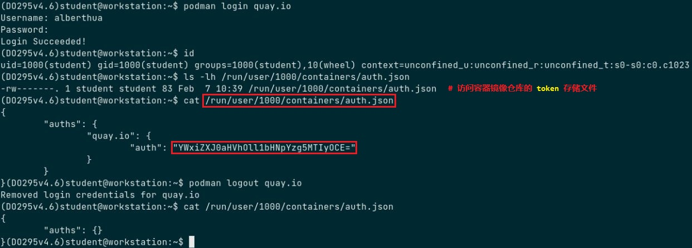1
2$ podman logout --all
# 登出所有的容器镜像仓库，并从 auth.json 文件中移除所有的 token。Podman 默认情况下需要与容器镜像仓库使用
TLS认证，若容器镜像仓库未配置 TLS、使用自签名的 TLS 证书或未知的 CA 签署的证书，需对 login、pull 或 push 子命令添加--tls-verify=false选项以完成认证。- Skopeo 与 Buildah 也可使用 Podman 保存的认证 token，但是无法执行交互式的登录密码输入。
示例 1：
👉 podman v3.2.3 登录 Harbor v1.8.1 身份认证报错：1
2
3
4
5
6
7
8
9$ podman login harbor.domain12.example.com:8880
Username: admin
Password: redhat
Error: authenticating creds for "harbor.domain12.example.com:8880": error pinging docker registry
harbor.domain12.example.com:8880: Get "https://harbor.domain12.example.com:8880/v2/":
http: server gave HTTP response to HTTPS client
# Podman 未做任何配置登录 Harbor 报错，该 Harbor 容器镜像仓库未配置 TLS 加密传输。
# 报错显示 Harbor 响应 HTTP 请求，而 Podman 发送 HTTPS 请求登录。
# 因此，将 Podman 配置为发送 HTTP 请求的客户端。🤔 解决方式一：
1
2
3
4
5$ podman login --tls-verify=false harbor.domain12.example.com:8880
Username: admin
Password: redhat
Login Succeeded!
# Podman 未进行任何配置，直接使用 --tls-verify=false 选项即可认证登录。🤔 解决方式二：
1
2
3
4
5
6
7
8
9
10
11
12
13
14
15
16
17
18
19
20
21
22
23
24
25
26
27
28
29
30
31
32
33
34
35
36
37
38
39
40
41
42
43
44$ mkdir -p ~/.config/containers/ && cd ~/.config/containers/
# 创建普通用户 rootless 容器的目录
$ vim ~/.config/containers/registries.conf
unqualified-search-registries = ['harbor.domain12.example.com:8880']
[[registry]]
location = "harbor.domain12.example.com:8880"
insecure = true
# If true, unencrypted HTTP as well as TLS connections with untrusted
# certificates are allowed.
block = false
# 配置未加密传输的 Harbor 容器镜像仓库的主机名与端口
$ podman login --log-level=debug harbor.domain12.example.com:8880
INFO[0000] podman filtering at log level debug
DEBU[0000] Called login.PersistentPreRunE(podman login --log-level=debug harbor.domain12.example.com:8880)
DEBU[0000] overlay storage already configured with a mount-program
DEBU[0000] Merged system config "/usr/share/containers/containers.conf"
DEBU[0000] overlay storage already configured with a mount-program
DEBU[0000] Using conmon: "/usr/bin/conmon"
...
DEBU[0000] Using OCI runtime "/usr/bin/runc"
DEBU[0000] Default CNI network name podman is unchangeable
INFO[0000] Setting parallel job count to 13
DEBU[0000] Loading registries configuration "/home/kiosk/.config/containers/registries.conf"
DEBU[0000] Loading registries configuration "/etc/containers/registries.conf.d/000-shortnames.conf"
DEBU[0000] Loading registries configuration "/etc/containers/registries.conf.d/001-rhel-shortnames.conf"
DEBU[0000] Loading registries configuration "/etc/containers/registries.conf.d/002-rhel-shortnames-overrides.conf"
DEBU[0000] No credentials for harbor.domain12.example.com:8880 found
Username: admin
Password: # 交互式输入登录密码
DEBU[0004] Looking for TLS certificates and private keys in /etc/docker/certs.d/harbor.domain12.example.com:8880
DEBU[0004] GET https://harbor.domain12.example.com:8880/v2/
DEBU[0004] Ping https://harbor.domain12.example.com:8880/v2/ err Get "https://harbor.domain12.example.com:8880/v2/": http:
server gave HTTP response to HTTPS client (&url.Error{Op:"Get", URL:"https://harbor.domain12.example.com:8880/v2/",
Err:(*errors.errorString)(0xc000590030)})
...
DEBU[0004] GET http://harbor.domain12.example.com:8880/service/token?account=admin&service=harbor-registry
DEBU[0004] GET http://harbor.domain12.example.com:8880/v2/
DEBU[0004] Stored credentials for harbor.domain12.example.com:8880 in credential helper containers-auth.json
Login Succeeded!
DEBU[0004] Called login.PersistentPostRunE(podman login --log-level=debug harbor.domain12.example.com:8880)
# Podman 默认使用 TLS 加密传输
# 以上配置文件将使 Podman 以 HTTP 方式认证登录 Harbor。示例 2：
👉 podman v3.2.3 推送容器镜像至 Harbor v1.8.1 中显示 “不完整”：1
2
3
4
5
6
7
8
9
10
11
12
13$ podman push harbor.domain12.example.com:8880/library/apache-rhce8.2-alpine:1.0
Getting image source signatures
Copying blob 551db21ded82 skipped: already exists
Copying blob 8213d0880f11 skipped: already exists
Copying blob e2eb06d8af82 skipped: already exists
...
Copying blob 05e56f8d5aae skipped: already exists
Copying blob 631e8a8040bb skipped: already exists
Copying blob dedba5c062fc skipped: already exists
Copying blob 0e609f35aa06 [--------------------------------------] 0.0b / 0.0b
Copying config 34f32c2e7a [======================================] 10.0KiB / 10.0KiB
Writing manifest to image destination
Storing signatures从推送的返回结果显示，具有 2 层容器镜像层似乎未推送成功，但将该镜像从 Harbor 中拉取并重新运行容器后，容器能正常提供服务，因此最后 2 层镜像层实际推送成功。
- 示例 3：
👉 容器镜像无任何运行或退出状态容器占用，但依然无法删除镜像，可尝试使用--force选项将其强制删除。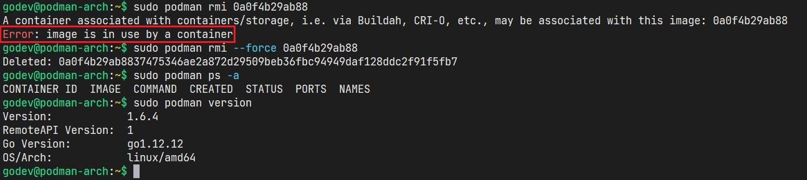 示例 4：
👉 由于从dockerbub上直接拉取的镜像为docker image format，无法使用podman commit命令提交为新的容器镜像，该命令对于-m选项不能对 docker image format 镜像生效，默认只支持OCI image format，因此使用 -m 选项对容器执行提交时需强制指定-f docker才能生效。📌注意：
可使用
skopeo工具转换 docker image format 与 OCI image format。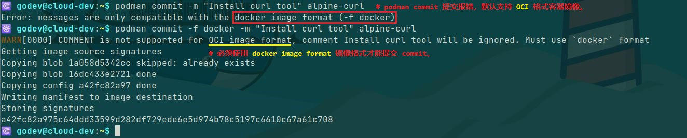
示例 5：
👉 podman 运行 rootfull 或 rootless busybox 容器后，ping外网报错权限问题无法 ping 通外网，但使用其他工具可与外网通信，通过 该文档 中可知，ping 命令对capability敏感，容器可能缺少CAP_NET_RAWcapability 无法通过宿主机 ping 通外网。
👉 当然，运行容器时指定--privileged选项可使容器获得与宿主机 root 用户同样的与宿主机交互的权限能力，但赋予的权限过高，应当压制该权限，更好的选择是对运行容器添加适当的Linux capabilities。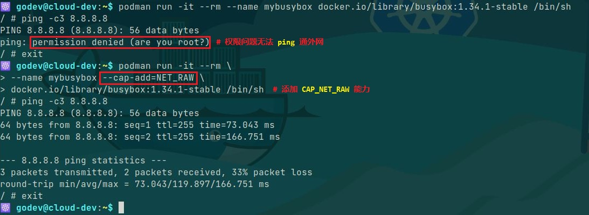
Podman 有待测试功能：
Podman 日志驱动目前只支持 k8s-file、journald 与 none，暂时不支持容器日志的 JSON 格式输出，因此不能与日志收集引擎 fluentd 集成，由其实现将日志传输至 ELK 或 EFK 进行集中式的存储与索引。